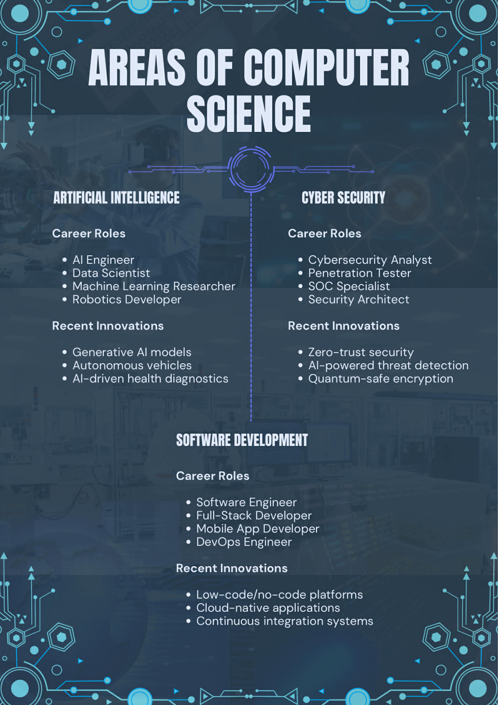
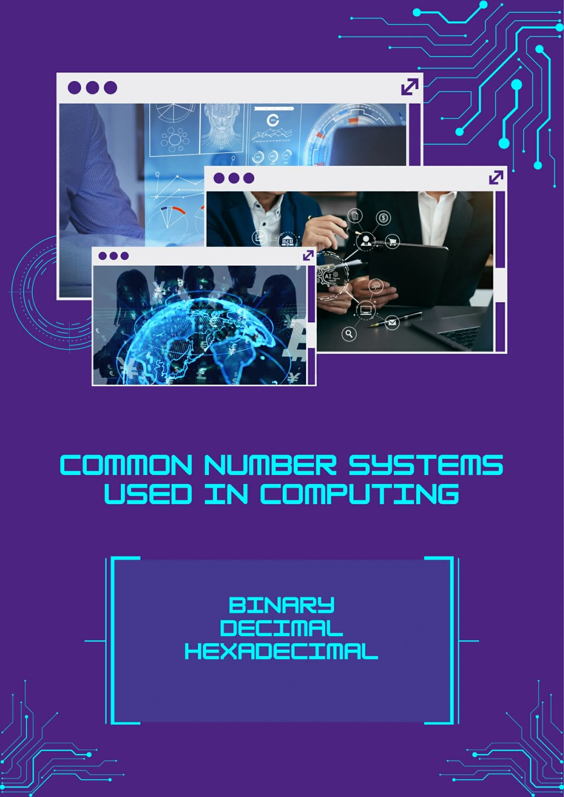
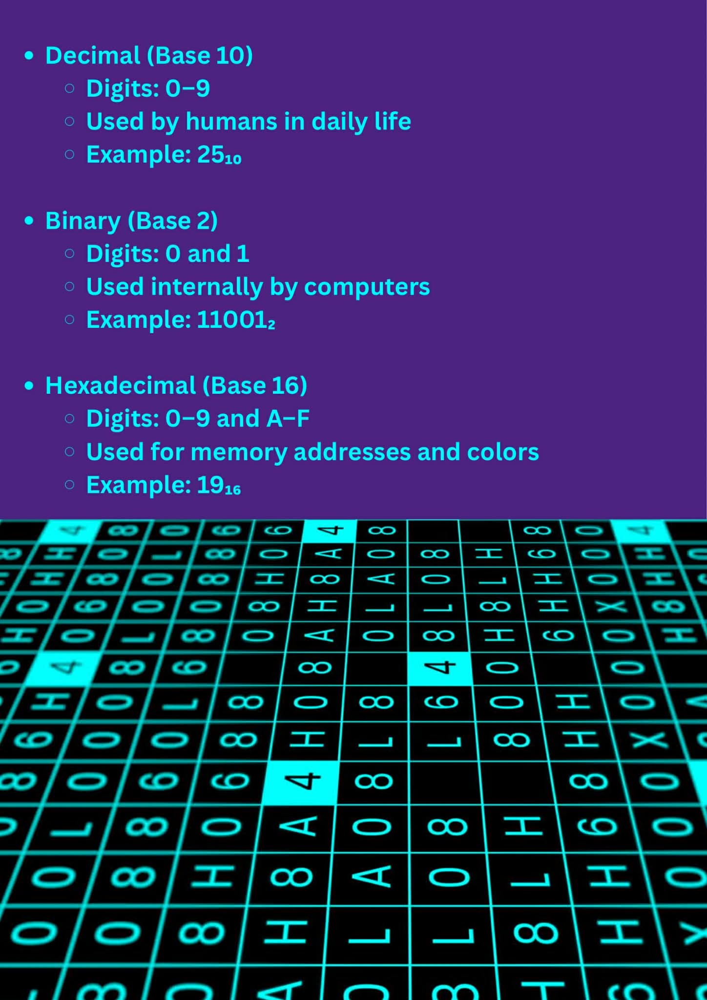
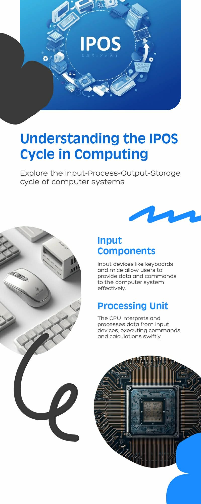

About Me

Hello! I am June Jayson M. Culanag Welcome to my ITC portfolio
I want share what I learned in my ITC classes to those who views my portfolio
Student | BSIS-1
Portfolio
AREAS OF COMPUTER SCIENCE
DATA, INFORMATION, AND KNOWLEDGE

SOFTWARE AND APPLICATION CONCEPTS


DATA AND DATABASE

COMMON NUMBER SYSTEMS
 
USES OF COMPUTER SYSTEMS
Business & Finance
Managing accounts, payroll, inventory, online banking, digital transactions, and data analytics for smart decision-making.
Education
Online learning platforms, virtual classrooms, research, digital libraries, and e-books for modern education.
Healthcare
Patient record management, diagnostic tools, medical imaging, telemedicine, and health monitoring devices.
Communication
Email, messaging apps, social media, video conferencing, and real-time global information sharing.
Entertainment
Streaming music, movies, games, VR/AR experiences, and digital content creation and sharing.
Science & Research
Data analysis, simulations, modeling, space exploration, climate studies, and lab experiment management.
Government & Public Services
E-governance, citizen services, traffic management, public safety, census, and statistical data management.
IPOS Devices, Internal and External Parts
Software Application Types

ALGORITHMS, PSEUDOCODE, AND FLOWCHARTS
Algorithm
An algorithm is a step-by-step procedure designed to solve a specific problem efficiently. It provides a clear plan for completing tasks correctly and consistently.
Pseudocode
Pseudocode is a way of expressing an algorithm using plain, human-readable language. It allows programmers to plan the logic of their program without worrying about programming syntax.
Flowchart
Flowcharts are diagrams that visually represent the steps of an algorithm using symbols and arrows. They make it easier to understand the process flow.
Differences
Pseudocode is textual and flexible, ideal for planning logic. Flowcharts are visual, showing the flow of a process, which helps communicate the algorithm to others clearly.
HOW DATA IS TRANSFORMED TO KNOWLEDGE (ESSAY)
In today’s age, data is constantly being collected, but raw data alone has little value unless it is transformed into meaningful knowledge. A clear example of this process can be seen in a school setting where student performance data is collected and analyzed to improve learning outcomes. This situation demonstrates how data moves through several transformation stages which are data collection, data processing, information creation, and knowledge generation.
The first stage is data collection. In a classroom, teachers gather raw data from quizzes, exams, attendance records, and assignment submissions. At this point, the data consists of isolated facts such as scores, dates of absences, and submission times. These numbers and records have no context yet; they simply represent observations about student activities and performance.
The second stage is data processing and organization. The collected data is then encoded and organized using spreadsheets or learning management systems. Scores are sorted by subject, student name, or date, and errors such as duplicate entries or missing values are corrected. Calculations like averages, totals, and percentages are performed. For example, individual quiz scores may be combined to compute a student’s overall grade in mathematics. At this stage, the data becomes more structured and easier to interpret.
The third stage is information creation. This happens when processed data is turned into information that is easy to understand, such as tables, charts, or reports. For example, a bar graph showing test scores over time can show if a student is getting better or worse. Attendance summaries can show patterns, like missing school on certain days. This information helps answer simple questions like “What is happening?” or “How are students doing?”
The final stage is knowledge generation. Knowledge is created when teachers, administrators, or students interpret the information and use it to make decisions. For instance, if the information shows that many students performed poorly on a particular topic, a teacher may conclude that the lesson needs to be reviewed or taught using a different approach. Similarly, consistent low performance combined with high absenteeism may lead to interventions such as counseling or additional academic support. At this point, experience, context, and judgment are applied, turning information into actionable understanding.
In conclusion, the transformation of student performance data into knowledge shows how raw data gains value through careful processing and interpretation. Each stage from collection to knowledge plays an essential role in ensuring that data is not just stored, but used effectively to improve teaching strategies and enhance student learning.
Contact Me
You can reach me via email or phone:
Email: cjunejayson@gmail.com
Phone: 09623167260
Send me a message
*You can also email me directly at cjunejayson@gmail.com.